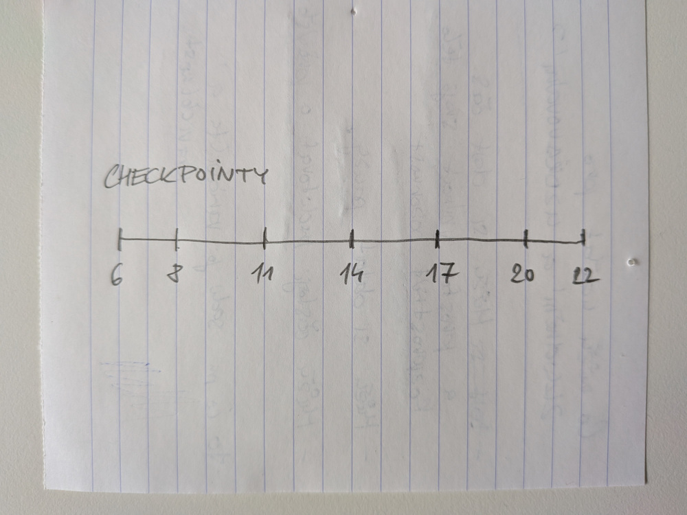

Vibe coding Kruhu pravidelnosti
Stop Making TUIs (via): Thomas Ptacek mě inspiroval zkusit si vibe coding nějakého grafického uživatelského rozhraní. Výsledkem je jednoduchá aplikace níže. Nazývám jí Kruh pravidelnosti (anglicky to byl trochu oříšek, nakonec jsem zvolil název The Guiding Circle).
Motivace
Už delší dobu se ve svém životě snažím posílit pravidelnost, ať už jde o spánkový režim, jídlo, nebo pohybové aktivity. Nutriční specialistka mi doporučila jíst pětkrát denně v pravidelných intervalech. Když jsem si to rozpočítal, vychází to na jedno jídlo každé tři hodiny. Najíst se hned ráno po probuzení mi nicméně nevyhovuje, takže tam potřebuji nějaký čas navíc. Poslední jídlo před ulehnutím by mělo být optimálně dvě hodiny předem. Tím vzniklo sedm časových bodů, checkpointů:

První verze ala papír a tužka
To je samozřejmě ideální scénář, šablona. Vstát v šest se mi ne vždy podaří. Totéž platí o ulehnutí v deset večer. Nicméně musím říct, že pravidelné časy na jídlo se mi dost osvědčily. Odpadlo zbytečné rozhodování a po relativně krátké době si tělo začalo samo říkat: „Hele, už je jedenáct, je čas se najíst.“
Navíc je mezi checkpointy dost času na práci i další aktivity a vznikají tak během dne přirozené pauzy. Záměrně nikde nepíšu, zda se jedná o snídani, oběd, svačinu, nebo večeři. Šablona je tak mnohem flexibilnější. Někdy prostě vstanu později a celé se to o jedno jídlo posune. Žádný stres. Důležité je, že ostatní checkpointy zůstávají a můžu do režimu zase snadno naskočit.
Vibe Coding
Nedávno jsem si říkal, že by se hodilo vidět, kde se právě v rámci checkpointů nacházím. Tak jsem agentovi (OpenCode + GPT-5.6 Luna) stručně popsal, co potřebuji, a nechal si vytvořit digitální verzi. Agent měl dobrý dotaz: jak reprezentovat čas mezi 22. a 6. hodinou ráno, tedy prostor pro spánek? To mě předtím nenapadlo a vyšel z toho kruh, který je mnohem přirozenější reprezentací než úsečka.
Zkusil jsem barevně odlišit různé fáze dne a vystoupily díky tomu věci, které jsem předtím neviděl: polovina dne (od 20 do 8 hodin) je čas na regeneraci, uvolnění a spánek, druhá polovina (od 8 do 20 hodin) na aktivity. Třebaže se jedná o velmi jednoduchou aplikaci, často mi během dne pomůže se zastavit a v klidu si naplánovat, co dál.
Přiznám se, že se jedná o první program, který jsem vytvořil, respektive si nechal vygenerovat, a netuším, jak funguje. Ověření funkčnosti je ale přímočaré, takže jsem s tím v míru. V JavaScriptu prakticky neprogramuji. Vytvoření něčeho podobného by mi zabralo dost času a úsilí a nejspíš bych se do toho vůbec nepouštěl. S agentem to bylo hotové za chvíli a navíc mi pomohl koncept lépe promyslet a vylepšit.
Zdrojový kód je k dispozici na GitHubu.
Update: Doplnil jsem chybějící odkaz na GitHub, text mírně upravil a opravil překlepy.